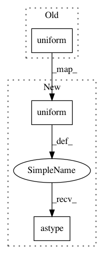

f5ff0f5fb3933bb4e704ce7947e2bd5a99ef8358,tests/links_tests/model_tests/yolo_tests/test_yolo_base.py,DummyYOLO,__call__,#DummyYOLO#,27
Before Change
def __call__(self, x):
assert(x.shape[1:] == (3, self._insize, self._insize))
self._value = self.xp.random.uniform(
(x.shape[0], self._n_anchor, 4 + 1 + self._n_fg_class),
dtype=np.float32)
return chainer.Variable(self._value)
def _decode(self, loc, conf):
value = to_cpu(self._value)
After Change
def __call__(self, x):
assert(x.shape[1:] == (3, self._insize, self._insize))
self._value = self.xp.random.uniform(
size=(x.shape[0], self._n_anchor, 4 + 1 + self._n_fg_class)) \
.astype(np.float32)
return chainer.Variable(self._value)
def _decode(self, loc, conf):
value = to_cpu(self._value)
In pattern: SUPERPATTERN
Frequency: 5
Non-data size: 3
Instances
Project Name: chainer/chainercv
Commit Name: f5ff0f5fb3933bb4e704ce7947e2bd5a99ef8358
Time: 2018-05-02
Author: Hakuyume@users.noreply.github.com
File Name: tests/links_tests/model_tests/yolo_tests/test_yolo_base.py
Class Name: DummyYOLO
Method Name: __call__
Project Name: tensorpack/tensorpack
Commit Name: 2ff9a5f4abc89f21980b3b575947377bd70d9ed6
Time: 2020-03-07
Author: ppwwyyxx@users.noreply.github.com
File Name: tensorpack/dataflow/imgaug/base.py
Class Name: ImageAugmentor
Method Name: _rand_range
Project Name: chainer/chainercv
Commit Name: 7e8ecb773649e218a14fcef812983580e7a5912d
Time: 2018-05-15
Author: yuyuniitani@gmail.com
File Name: tests/experimental_tests/links_tests/model_tests/fcis_tests/utils_tests/test_mask_voting.py
Class Name: TestMaskVoting
Method Name: setUp
Project Name: chainer/chainercv
Commit Name: b7bce0c602053eed6b1ccf9e7783f6bffeb067dd
Time: 2017-10-14
Author: Hakuyume@users.noreply.github.com
File Name: tests/dataset_tests/test_annotated_image_dataset_mixin.py
Class Name: MultipleAnnotationDataset
Method Name: get_annotation